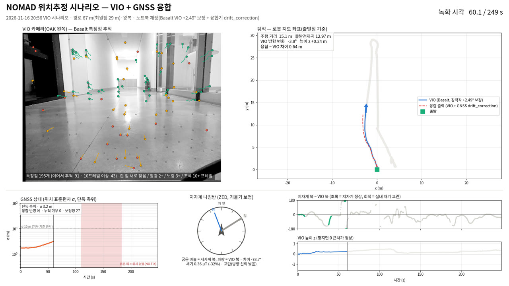
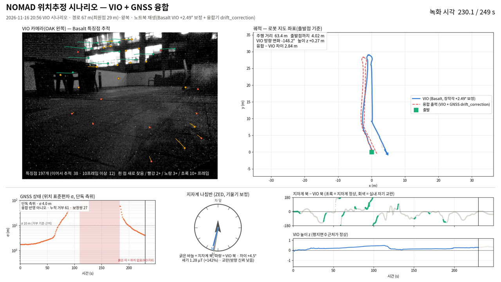
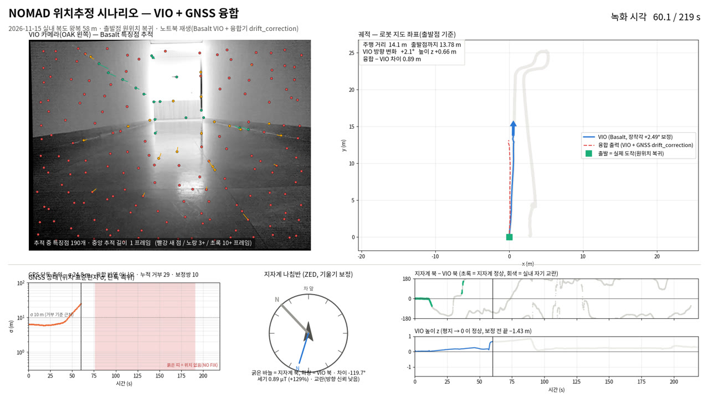
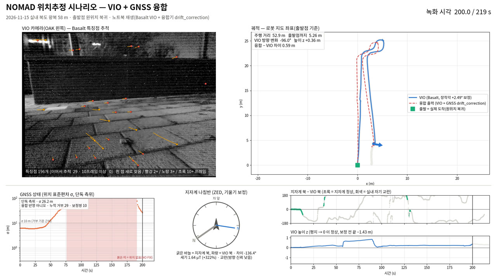
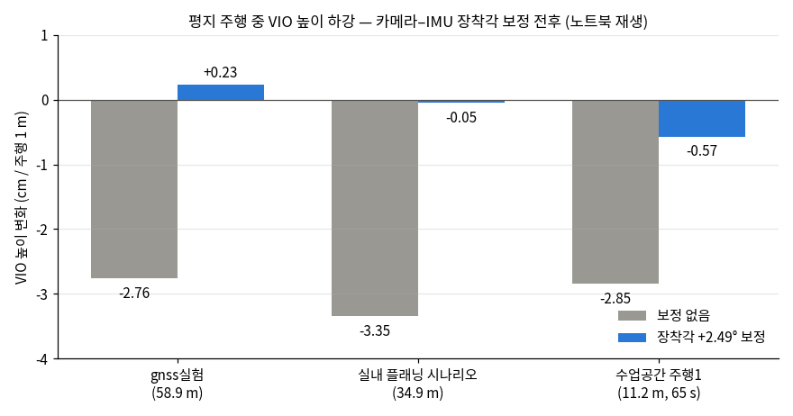
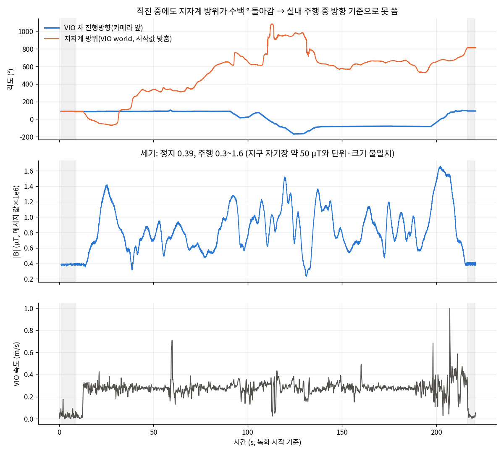

위치추정 시나리오 — VIO + GNSS 융합
센서 녹화를 노트북에서 재생해 Basalt VIO(카메라–IMU 장착각 +2.49° 보정)와 VIO+GNSS 융합기(drift_correction), 지자계 방향을 함께 본다. 보드(Pi5/Jetson) 설정은 바꾸지 않았다. 11/16 시나리오 · 11/15 복도 왕복(분석 상세)
11/16 20:56 VIO 시나리오 최신
정정(11/16 21:45): 처음 게시 때 "끝에서 출발점까지 VIO 4.15 m → 융합 1.34 m, 끝 위치 개선"이라고 적었으나 잘못된 해석이었다. 아래 검증 참고.
| GNSS 구간 | 상태 |
|---|---|
| 0~108 s | 위치 있음 109개, σ 중앙 2.9 m (60 s 이후 σ 커짐) |
| 109~182 s | 위치 없음(NO FIX) 74개 |
| 183~248 s | 재획득 66개: 처음 약 25 s는 수십 m 튐(σ 44→10 m), 이후 출발점 근처로 수렴(끝 σ 3.3 m). 융합기는 이 구간 GNSS를 쓰지 않음 |
융합 결과 검증
| 재생 조건 | 융합 − VIO 차이 (최대 / 끝) | 융합 끝 → 출발점 | 융합 방향 − VIO 방향 |
|---|---|---|---|
| GNSS 없음 (대조군) | 0.37 m / 0.12 m | 3.75 m | 0° |
| GNSS 있음 | 2.93 m / 2.86 m | 1.34 m | 0° |
- 차이는 GNSS 때문이 맞다(GNSS를 빼면 융합 ≈ VIO). 같은 조건 재생도 VIO 끝 위치가 실행마다 약 0.6 m 흔들린다.
- 하지만 이 보정은 틀렸다. GNSS는 0~60 s의 27쌍만 쓰였고, 융합기는 방향(yaw) 맞춤 신뢰도가 부족하자 방향은 0°로 둔 채 평행이동(약 −2.6, −1.1 m)만 맞췄다. 그런데 VIO 좌표는 동·북에 정렬돼 있지 않았다(지자계 전부 거부). 같은 구간 GNSS 진행 방향 약 133°, VIO 약 104° → 약 29° 어긋난 두 궤적을 평행이동으로만 맞춘 부산물이다.
- 끝에서 출발점까지 1.34 m는 이 이동이 우연히 끝점을 출발점 쪽으로 당긴 결과이고, VIO 드리프트를 고친 것이 아니다. 방향 보정은 처음부터 끝까지 0°였다.
- GNSS 융합이 의미 있으려면 먼저 VIO 좌표를 동·북에 맞춰야 한다(지자계 단위 문제 해결, 또는 GNSS 이동 방향으로 정렬). 방향이 확정되기 전에는 위치 보정도 하지 않도록 융합기 수정이 필요하다(검토 중, 미적용).
- 장착각 보정으로 높이 하강은 이 녹화에서도 없었다(끊김·점프 0).
- 지자계는 값 단위 문제로 융합기가 전부 거부(9529개) — 방향은 VIO 자세 그대로.
- 차의 실제 끝 위치(원위치 복귀 여부)는 확인하지 않아, '출발점까지 거리'를 오차로 단정하지 않는다.


11/15 실내 복도 왕복 — 원위치 복귀 (분석 상세)
실내 복도를 왕복해 출발점으로 원위치 복귀한 센서 녹화(58 m)를 노트북에서 재생해, Basalt VIO와 VIO+GNSS 융합기, 지자계 방향을 함께 확인했다. 보드(Pi5/Jetson) 설정은 바꾸지 않았다.
결과 영상
| 화면 위치 | 내용 |
|---|---|
| 위 왼쪽 | OAK 왼쪽 카메라 + Basalt 특징점 추적 (흰 점 새로 찾음, 빨강 2+, 노랑 3+, 초록 10+ 프레임 이어서 추적, 선 = 최근 이동 꼬리) |
| 위 오른쪽 | 궤적: VIO(파랑), 융합 출력(빨강 점선), 차 화살표, 주행 거리·출발점까지 거리·높이 |
| 아래 왼쪽 | GNSS 위치 표준편차 σ(로그), 위치 없음(NO FIX) 구간, 융합 반영·누적 거부 |
| 아래 가운데 | 지자계 나침반(차 앞이 위): 굵은 바늘 = 지자계 북(ZED, 기울기 보정), 파랑 = VIO가 생각하는 북 |
| 아래 오른쪽 | 지자계 북 − VIO 북 차이(초록 정상, 회색 실내 자기 교란), VIO 높이 z |


1. 카메라–IMU 장착각 보정 → VIO 높이 하강 해결
평지인데 VIO 높이가 주행 1 m당 2.8~3.4 cm씩 내려갔다. 카메라–IMU 사이 pitch 장착각을 +2.49° 보정해 재생하니 녹화 3개 모두에서 사라졌다. 수평 궤적·방향·추적은 그대로(끊김·점프 0).

| 녹화 | 보정 | z 변화 cm/m | 끝 z | 방향 변화 |
|---|---|---|---|---|
| gnss실험 (58.9 m) | 없음 | −2.76 | −1.43 m | +6.0° |
| +2.49° | +0.23 | +0.27 m | +5.7° | |
| 실내 플래닝 시나리오 (34.9 m) | 없음 | −3.35 | −1.11 m | −9.1° |
| +2.49° | −0.05 | 0.00 m | −9.0° | |
| 수업공간 주행1 (11.2 m) | 없음 | −2.85 | −0.36 m | +33.5° |
| +2.49° | −0.57 | −0.07 m | +33.6° |
정지 구간 가속도는 크기 9.70~9.72 m/s², VIO 중력 대비 잔차 0.1~0.24 m/s²로 정상 범위 → IMU 축 문제보다 장착 회전으로 설명된다(추정). Pi5 보드에는 아직 반영하지 않았고, 최종은 체커보드 카메라–IMU 정식 보정 예정.
2. 원위치 복귀 오차 = VIO 방향(yaw) 드리프트
실제로는 출발점에 5~10 cm 이내로 돌아왔지만 VIO 끝 위치는 2.7~3.6 m 벗어났다(같은 조건 재생도 실행마다 0.5~0.8 m 흔들림). 갈 때·올 때 직선 방향이 정반대보다 약 9° 틀어졌고, 25 m × sin 9° ≈ 3.8 m가 끝 오차와 맞는다. 장착각 보정은 높이용이라 이 방향 오차는 그대로다.
3. 지자계(ZED) 확인
- ZED 지자계 축 → OAK IMU 축 회전을 보정 파일(카메라–라이다 캘리브레이션 체인)로 계산: 정지 중력으로 검증 오차 0.1° 이내.
- 출발·끝 정지(같은 자리)에서 지자계 방향 기준 VIO 방향 드리프트 약 5.6~6.1°를 독립 확인.
- 주행 중에는 실내 자기 교란이 커서(세기 최대 4배 변동, 직진 중 방위 수백 ° 회전) 방향 기준으로 쓸 수 없음.
- 지자계 값 크기가 0.4~1.6 µT로 지구 자기장(약 50 µT)과 단위가 맞지 않음 — 원인 미확인. 현재 융합기는 10 µT 미만을 거부해 지자계 입력이 전부 버려지고 있다.

4. GNSS·융합기 동작
11/16 검증과 같은 구조(VIO 좌표 미정렬 상태에서 GNSS 평행이동만 맞춤)일 가능성이 크다 — 융합 2.69 m는 개선으로 보지 않는다(이 녹화는 대조군 미확인).
| 항목 | 값 |
|---|---|
| GNSS | 단독 측위, fix 220개 중 유효 105, σ 6 m → 45 m 악화, 약 75~190 s 위치 없음, 재획득 때 45~67 m 튐 |
| 융합(drift_correction) | 앞쪽 GNSS 10쌍으로 xy 0.6~0.7 m 보정 후 나머지 41개 거부(불확실·VIO 불일치) → 튐을 따라가지 않음 |
| 방향 | VIO 자세를 그대로 사용(지자계 거부, GNSS 방향 맞춤 없음) → 방향 드리프트를 잡아 줄 입력이 없음 |
결론과 다음 할 일
- 장착각 보정으로 VIO 높이 하강은 해결 → Pi5 반영 여부 결정, 체커보드 정식 보정.
- 남은 큰 오차는 VIO 방향 드리프트(4~6°). 실내에서는 GNSS·지자계가 방향을 잡지 못함 → 실외 RTK + 지자계 재시험 필요.
- 지자계 단위 문제 원인 확인(ZED 래퍼) 후 융합기에 지자계 방향 항 추가 검토.
VIO 높이에 57 s·90 s 근처 계단형 튐(최대 +0.84 m)이 이번 실행에 있음 — 원인 미확인. 모든 결과는 노트북 재생이며, 원본 녹화·결과는 팀 노트북에 보관.